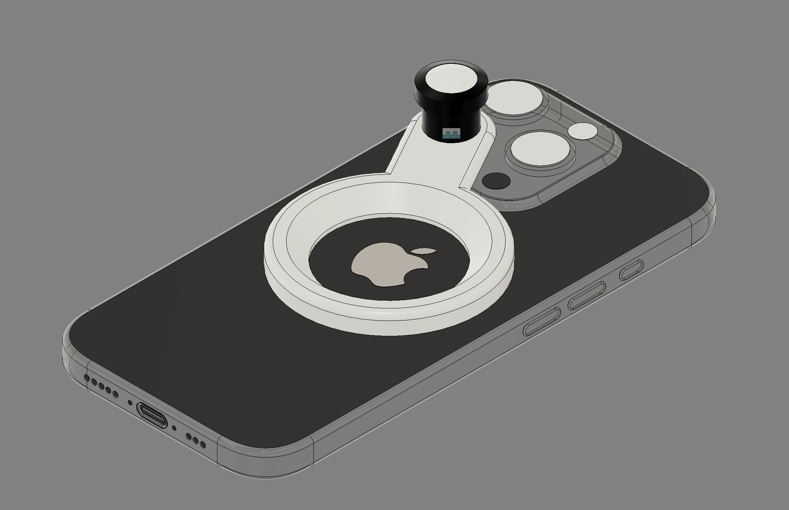

Purpose
This project creates a better way to attach external lenses to an iPhone camera. The accessory uses MagSafe magnets to mount a fisheye lens directly over the camera module, replacing the awkward clip on systems that dominate the market. The goal is to make lens attachment fast, secure, and properly aligned every time.
The idea
The adapter is a 3D printed magnetic mount that holds a fisheye lens element. The mount uses the existing MagSafe ring on the back of newer iPhones to attach and align. Because MagSafe magnets are strong and self centering, the lens snaps into the correct position over the camera without manual adjustment. This solves the main problem with clip on lens adapters, which often sit crooked, shift during use, or require fiddling to line up properly.
The fisheye lens itself is either salvaged from an existing cheap clip on lens or designed as part of the 3D printed assembly. The key innovation is not the lens optics but the mounting system. MagSafe provides more secure attachment than spring loaded clips while still being quick to attach and remove. The magnetic connection also means the adapter works with or without a MagSafe compatible case, as long as the case is thin enough to allow magnetic contact.
The design accounts for the camera bump found on modern iPhones. The mount sits flush around the camera island, so the lens element remains at the correct distance from the camera sensor. This means the optical performance stays consistent and the mount does not rock on the surface. Some versions of the design may include a thin rubber or silicone ring around the contact area to prevent scratching and improve grip.
Unlike traditional clip on lenses that clamp onto the entire phone edge, this adapter only attaches at the MagSafe ring. That makes it lighter, less bulky, and easier to store. It also avoids stress on the phone edges or screen, which can be a problem with tight fitting clips on newer phones with curved glass.
Sketch

Who uses this and why
This is for iPhone users who want creative lens options but find existing clip on systems frustrating. Photographers, content creators, and casual users who like wide angle or distorted perspectives all benefit from a fisheye lens, but most avoid them because the attachment process is annoying. This adapter makes the workflow simpler, so people actually use the lens instead of leaving it in a drawer.
The product also appeals to people who already use MagSafe accessories, because it integrates into the same ecosystem. If you already carry a MagSafe wallet, battery pack, or car mount, adding a lens adapter feels natural. The magnetic attachment is familiar and reliable, so there is less friction in adopting another accessory.
What could make the product better and why
The biggest improvement is adding interchangeable lens elements. If the magnetic base is universal, you could swap between fisheye, macro, wide angle, and telephoto lenses by snapping different optics into the same mount. This turns a single purpose fisheye adapter into a versatile lens system. The challenge is keeping optical alignment tight across multiple lens types, but the MagSafe centering already solves most of that.
Another improvement is creating versions for different iPhone models. Older iPhones do not have MagSafe, but you could offer a companion adhesive ring that sticks to the back of the phone and provides the same magnetic interface. That expands compatibility without changing the core design.
Material refinement would also help. While 3D printed plastic works for prototypes and small batches, a production version in aluminum or machined plastic would feel more premium and durable. Adding a lens cap that also snaps on magnetically would protect the optics when not in use and complete the system.
Does anyone really care and if so why
Yes, because clip on lens systems are common but universally annoying. Every existing option either fits poorly, shifts during use, or takes too long to align. MagSafe fixes all three problems, so this adapter addresses a real pain point for a large group of users. People who already gave up on clip on lenses would consider trying again if the attachment method actually worked.
There is also growing interest in non computational photography, where the image effect comes from optical hardware instead of software processing. A fisheye lens creates a look that cannot be replicated in post, so it still has value even with advanced phone cameras. That makes it more than just a novelty accessory.
Is this marketable and if so how
It is marketable both as a standalone fisheye adapter and as part of a larger lens system. The pitch is that it uses MagSafe to make lens attachment effortless, secure, and perfectly aligned. Marketing would target iPhone photographers, vloggers, and skateboarders or action sports communities that already use fisheye lenses for their aesthetic.
The product works well for online sales because it has a clear before and after story. Demonstration videos showing how quickly the lens snaps on compared to struggling with a clip would resonate. It also benefits from MagSafe brand recognition, since people already understand how the magnets work and trust the connection strength.
Pricing sits between cheap clip on lenses and premium multi element systems like Moment. A single fisheye adapter could sell for around $30 to $40, while a set with multiple interchangeable lenses could reach $80 to $100. That positions it as a quality upgrade over disposable clips without competing directly with high end glass optics.
This is a private blog for course notes and reflections. Content is not indexed or publicly listed.